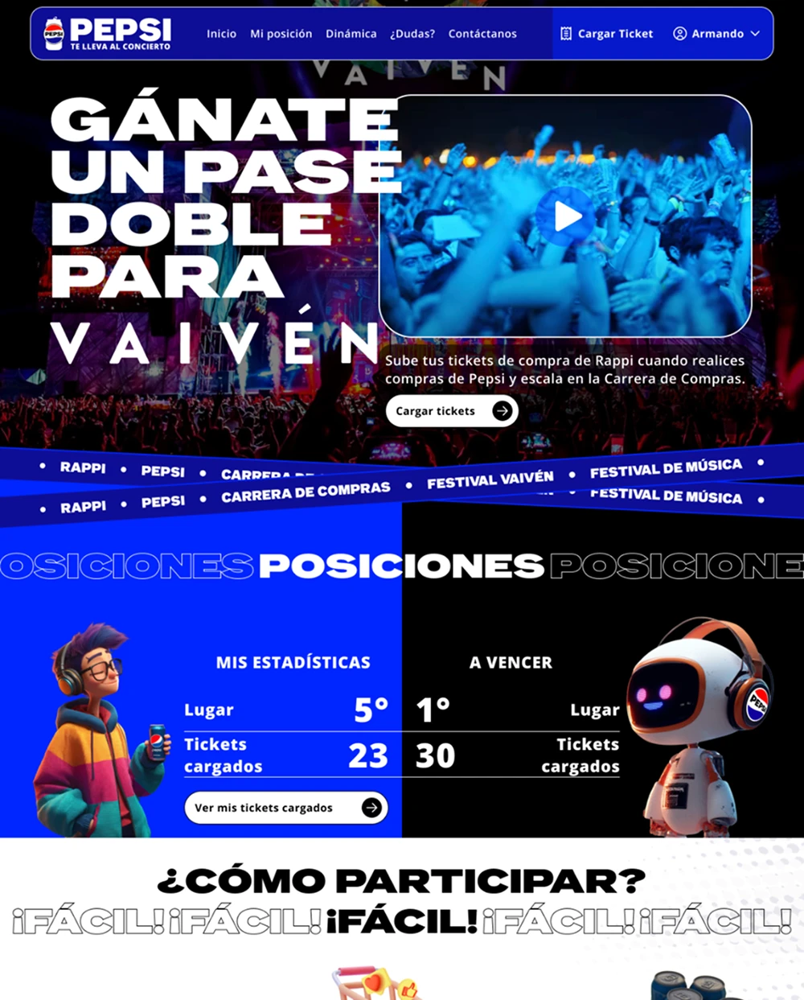
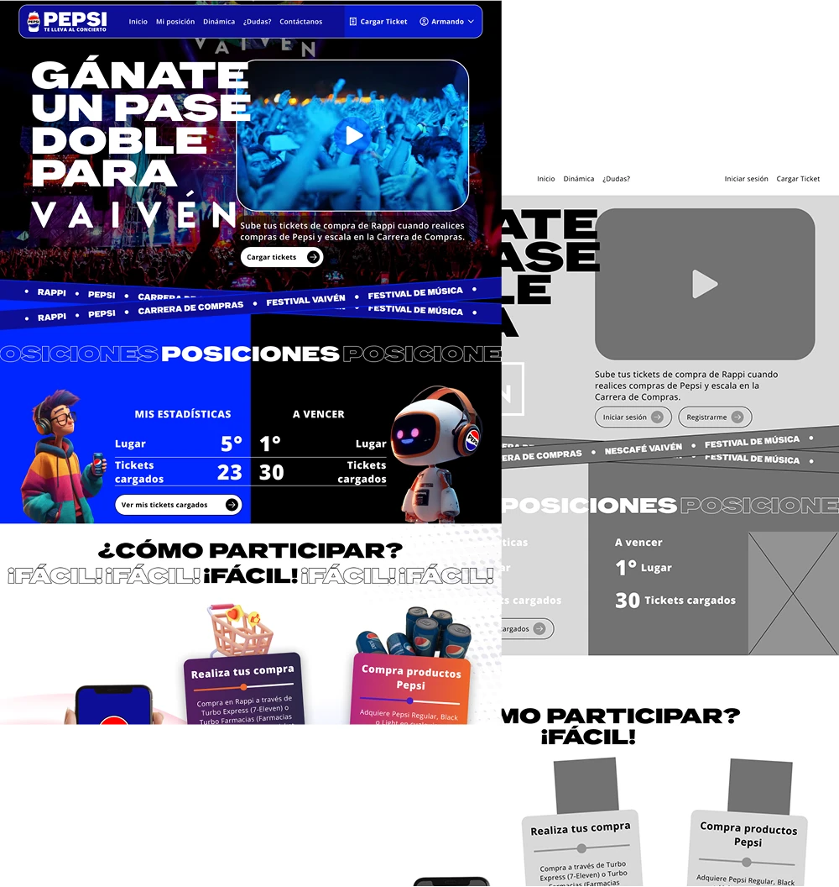
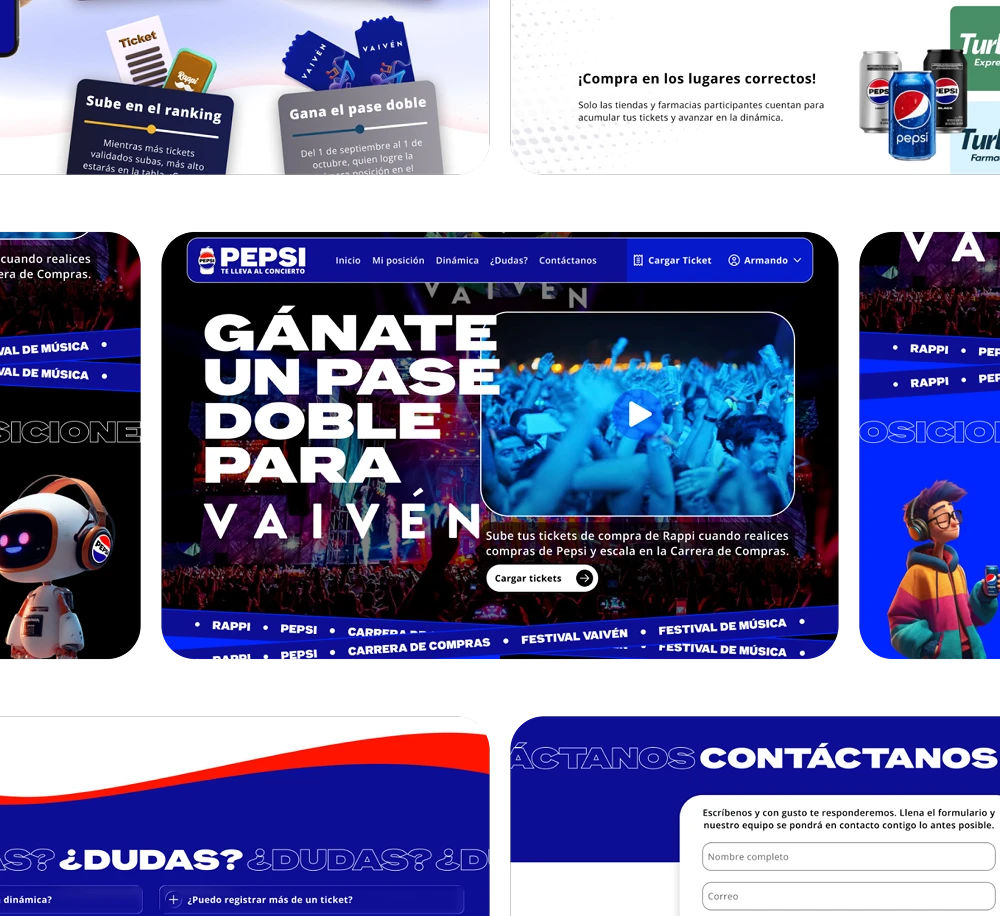
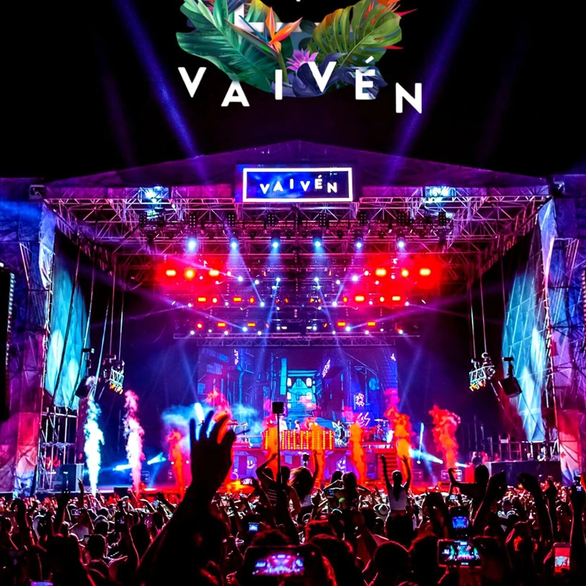

Pepsi te lleva al concierto
Una plataforma promocional donde cada compra de productos Pepsi suma: los usuarios cargan sus tickets, escalan en el ranking y compiten por un pase doble al Festival Vaivén.

Convertir cada compra de productos Pepsi en una oportunidad de ganar. Los usuarios tenían que comprar, cargar su ticket y ver al instante cuánto les faltaba para el primer lugar, con una dinámica tan clara que invitara a volver una y otra vez hasta el cierre.
Pensada primero para el celular, donde se hacen las compras en Rappi, y adaptada a escritorio.
El botón para subir tickets siempre a la mano: en el menú, el hero y las posiciones.
“Mis estadísticas” frente a “A vencer”: lugar y tickets del usuario contra el primer lugar.
Personajes, cintas y tarjetas tipo reproductor musical que conectan con el festival.
Impulsar la compra de productos Pepsi a través de Rappi con una dinámica que motive compras repetidas.
Que cargar un ticket y saber en qué lugar vas tome solo unos segundos.
Una dinámica
fácil de seguir
Empatizar
Sesiones con el equipo de marca y entrevistas a compradores frecuentes de Rappi para entender cómo compran, qué los motiva a entrar a una promoción y qué los hace abandonarla.

Definir
Organicé lo recopilado en un affinity map de éxitos, oportunidades y puntos de dolor. La conclusión: la gente participa si entiende rápido las reglas, carga su ticket en segundos y ve cuánto le falta para ganar.
Ver mi posición en el ranking en todo momento.
Affinity mapCargar el ticket en pocos pasos desde el celular.
Affinity mapSaber cuántos tickets me faltan para el primer lugar.
Affinity mapQue el premio y las fechas sean claros desde el inicio.
Affinity mapRecordar qué productos y tiendas participan antes de comprar.
Affinity mapAvisar cuando un ticket fue validado.
Affinity mapMostrar al primer lugar como meta a vencer.
Affinity mapContagiar la emoción del festival con video y música.
Affinity mapDudas sobre qué compras cuentan para la dinámica.
Affinity mapTickets rechazados por comprar en tiendas no participantes.
Affinity mapNo saber si el ticket ya fue validado.
Affinity mapReglas largas y difíciles de leer.
Affinity mapIdear
Una sola página con todo el recorrido: hero con el premio, posiciones, ¿cómo participar?, establecimientos, dudas y contacto. La mecánica se explica en cuatro tarjetas con estética de reproductor musical, un guiño al festival.

Prototipar
Alta fidelidad con la identidad de Pepsi (azul, negro y rojo) y el lenguaje visual de Vaivén. El botón para cargar tickets está siempre visible: en el menú, el hero y las posiciones.

Ver mi posición en el ranking en todo momento.
Affinity mapCargar el ticket en pocos pasos desde el celular.
Affinity mapSaber cuántos tickets me faltan para el primer lugar.
Affinity mapQue el premio y las fechas sean claros desde el inicio.
Affinity mapRecordar qué productos y tiendas participan antes de comprar.
Affinity mapAvisar cuando un ticket fue validado.
Affinity mapMostrar al primer lugar como meta a vencer.
Affinity mapContagiar la emoción del festival con video y música.
Affinity mapDudas sobre qué compras cuentan para la dinámica.
Affinity mapTickets rechazados por comprar en tiendas no participantes.
Affinity mapNo saber si el ticket ya fue validado.
Affinity mapReglas largas y difíciles de leer.
Affinity mapTestear
Pruebas del prototipo con compradores de Rappi: cargar un ticket, encontrar su posición y resolver una duda. Los hallazgos llevaron a reforzar el estatus de validación del ticket y a reunir las reglas en preguntas frecuentes.
| Tarea asignada | Andrea24 años | Diego28 años | Fernanda32 años | Ricardo36 años | Mariana41 años |
|---|---|---|---|---|---|
| Localizar y realizar la carga de un ticket de compra | ✓ | ✓ | ✓ | ✓ | ✓ |
| Identificar los productos participantes | ✓ | ✓ | ✓ | ✓ | ✓ |
| Verificar su posición y el usuario a vencer | ✓ | ✓ | ✓ | ✓ | ✓ |
| Consultar los tickets cargados | ✓ | ✓ | ✓ | ✕ | ✕ |
| Identificar el premio y las fechas de participación | ✓ | ✓ | ✓ | ✓ | ✕ |
Una dinámica clara de principio a fin
- Facilidad de navegación: Se identificó la importancia de contar con una estructura intuitiva que facilite el recorrido por la plataforma.
- Carga de tickets: Se reconoció la necesidad de simplificar y hacer más visible el proceso de registro de compras.
- Comprensión del progreso: Se identificó la necesidad de mostrar de forma sencilla la posición del usuario frente al participante que ocupa el primer lugar.

proyectoMarket Excellence Toolbox→